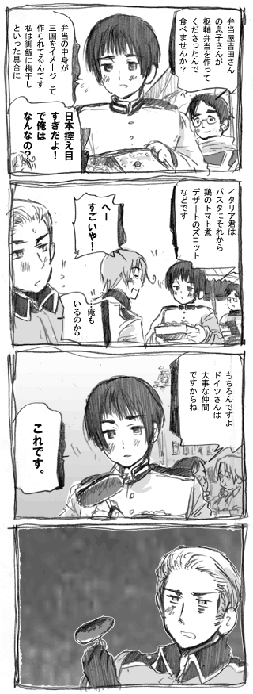

|
ブログでバルヨナ設定集色々更新。
というわけでサイトの更新作業と
身長差制作に戻ります。
こんな感じです。
■スウウウウェェデイング■
スウェーディング芸術
段ボールとテープだけで映画全部再現してほしい！
【スウェーディング・スウェデる・スウェる】
段ボールやガラクタとかで
なにかでかいことにトライすること
（町山智浩アメリカ日記さんより）
りゃま大興奮
アルパカだこれ。
情報ありがとうございました！
■会えるよ！■
|
やること終わらせてきました！
でかい書店でイタリアとちびタリアに会えるかも。 |
ブログの身長差好評でよかったです。
やることの合間にちょとこちょあげていきます。
こうやってちゃんと描いてみると意外と
身長差って大きいんだなって思います。
>>ちびたりあや神聖ローマはどれくらいの
大きさですか？
ちびたりあ：りんご７個分
神聖ローマ：リンゴ７個とみかん一個分
縦に並べた大きさです。
あとで表に加えておきます。
■大英帝国の食卓■
イギリス「まずいって言われるし、
作り方知らないし、面倒くさい。」
イギリスの家庭で一般に作られてる料理は
6メニューのみ（らばQさん）
ひどすぎる。
■アルパカＴシャツ■
■アルパカＴシャツ
華麗なカオスの世界へようこそ。
■パスタがなる木スイスが実用化（らばＱさん）
最後がとってもスウェーディング。
■ベルギーエイプリルフールに
羽目を外しすぎて緊張状態に
ベルギー体張りすぎ。
■カナダさんのささやかなジョーク
とてもささやか。
情報ありがとうございました！
日本はもう桜が咲いてるそうで
春到来ですね。ＮＹはまだ寒いです。
どうでもいいニューヨークニュース。
近所でマフィアが捕まりました。
あとご質問頂いてたのお答えします！
>>チビリスはどれくらいの大きさですか？
これくらいです。
>>それと質問、スーさんとフィンさんの
好きなタイプをおしえてください。
あとスーさんってどこ弁ですかね?
スウェーデンの鉛は福島弁（中部）です。
スウェーデン人の話口調が何となく似てたので
そんな感じにしてみました。
好みのタイプは
スー：めんげえ。（いろんな意味で）
フィン：優しくて、どこか不思議な所を持った人
インタビューこの二人も描きたかったなぁ。
■世界のエイプリルフール■
イギリスのエイプリルフールはぶっ飛びすぎ。
フランス大統領もネタにするイギリスであった。
・ハンガリーさんUP
竹林ブログにて身長差を微妙にリアルタイムで
お届けしています。（Ｍａｃの方用）
■ヘタリアThe本特設ページ
カウントダウン開始！
カウントダウン４日前の壁紙UPしました！
カウントダウンボイス音量調節失敗していたので
UPし直しましおた。あとリンクミス修正。
報告ありがとうございました。
■待ち受け■
リクエストの仮TOPイギリスの待ち受け。
クリックするとファイルに飛びます。
カウントダウンに向けて没になった漫画を
描き直したり文字入れたりしています。
没になったネタを読み返しているんですが
ギリシャの母ちゃんが高速運動していたり
イギリスがちびになって世界征服しようとしたり
どう考えてもとち狂ってたとしか思えないような
ネタばっかりです。
■変な夢見た■
インデックス更新しました！
■イタリア■
今日の落書き.
■没漫画■

【枢軸弁当】
枢軸に関係したものが詰め込まれたお弁当。
ドイツがソーセージのみ。
当時枢軸関係のものがこの他にも
いっぱいでていたらしい。
会津にも枢軸三国のつながりを
残すものがちょこちょこある。
図書館でWW2関連の本読んでたら出てきたんですが、同盟国でお弁当作るという発想は、確かにアメリカからしたら不思議な文化かもしれない…。
今日のどうでもいい豆知識。
弁当はアメリカでも「BENTO」
■アメカン■

こんにちは日丸屋です。
サイトの改装したり遅れてしまっていた漫画
などなどサイトの方に力入れていくぞー
ヘタリアで男ばっかり（オチまで男ばっかり）
描いていたので女の子キャラも描きたい。
■フランス兵■
フランス兵士が死を感じた瞬間
ぽとっ
フランスは軍よりも民衆が束になった方が怖い国。
■きたよ！■
ヘタリア特設ページができたようです
もうそろそろです。ドキドキしてきた！
没になったネタなどは発売後ＵＰしてもいいという
御達しが出たのでカラーページの没ページや
酷すぎる下書きなどおいておきます。
指治ったらゲーム作ったりするんだ…
■デットヒート■

こんな顔ばっかりだ。
■ゆるゆる■
【ギリシャの哲学】
哲学の起源は紀元前６世紀ギリシャの
アナクシマンドロスさんから始まったと
いわれています。
|
{kind=link}
{kind=link}
{kind=link}